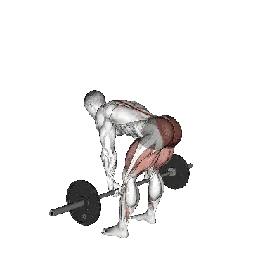

Rumänisches Kreuzheben
Für Rumänisches Kreuzheben kannst du Durchschnittsgewicht und Kraftstandards als Referenz für den Bereich Ganzkörper vergleichen. Die Zielmuskulatur ist Hamstrings, Gluteus maximus, Rückenstrecker.
Durchschnittsgewicht
GanzkörperGanzkörperübungenBIG3 / GanzkörperHamstringsGluteus maximus

Zielmuskulatur
| Gruppe | Muskeln |
|---|---|
| Zielmuskulatur | Hamstrings, Gluteus maximus, Rückenstrecker |
| Sekundäre Muskeln | Quadrizeps, Adduktoren |
| Stabilisatoren | Äußere schräge Bauchmuskeln, Trapezmuskel |
| Griff | Unterarmbeuger |
Rumänisches Kreuzheben: Durchschnittsgewicht [1RM]
| Level | ||
|---|---|---|
| Einsteiger | 55 kg (121 lb) |
29 kg (63 lb) |
| Anfänger | 84 kg (185 lb) |
45 kg (99 lb) |
| Fortgeschrittene | 120 kg (266 lb) |
66 kg (146 lb) |
| Erfahrene | 164 kg (361 lb) |
91 kg (201 lb) |
| Elite | 211 kg (466 lb) |
119 kg (262 lb) |
Hinweis: Diese Standards sind 1RM-Schätzwerte auf Basis durchschnittlicher Kraftsportlerinnen und Kraftsportler. Körpergewicht, Alter und andere persönliche Faktoren können die Werte beeinflussen. Die detaillierten Daten stehen in der Tabelle unten.
Rumänisches Kreuzheben: Kraftstandards(lb)
Männer nach Körpergewicht (lb) [1RM]
| Körpergewicht | Einsteiger | Anfänger | Fortgeschrittene | Erfahrene | Elite |
|---|---|---|---|---|---|
| 110 | 62 | 104 | 160 | 227 | 303 |
| 120 | 73 | 119 | 178 | 249 | 328 |
| 130 | 85 | 133 | 195 | 269 | 351 |
| 140 | 96 | 147 | 212 | 289 | 373 |
| 150 | 107 | 160 | 228 | 308 | 395 |
| 160 | 118 | 173 | 244 | 326 | 415 |
| 170 | 128 | 186 | 259 | 343 | 435 |
| 180 | 139 | 199 | 274 | 360 | 454 |
| 190 | 149 | 211 | 288 | 377 | 472 |
| 200 | 159 | 223 | 302 | 393 | 490 |
| 210 | 169 | 235 | 315 | 408 | 507 |
| 220 | 178 | 246 | 329 | 423 | 524 |
| 230 | 188 | 257 | 341 | 438 | 540 |
| 240 | 197 | 268 | 354 | 452 | 556 |
| 250 | 207 | 279 | 366 | 466 | 572 |
| 260 | 216 | 289 | 378 | 479 | 586 |
| 270 | 224 | 300 | 390 | 492 | 601 |
| 280 | 233 | 310 | 401 | 505 | 615 |
| 290 | 242 | 319 | 413 | 518 | 629 |
| 300 | 250 | 329 | 424 | 530 | 643 |
| 310 | 258 | 339 | 434 | 542 | 656 |
Männer nach Alter [1RM]
| Alter | Einsteiger | Anfänger | Fortgeschrittene | Erfahrene | Elite |
|---|---|---|---|---|---|
| 15 | 103 | 157 | 226 | 307 | 396 |
| 20 | 118 | 180 | 259 | 352 | 454 |
| 25 | 121 | 185 | 266 | 361 | 466 |
| 30 | 121 | 185 | 266 | 361 | 466 |
| 35 | 121 | 185 | 266 | 361 | 466 |
| 40 | 121 | 185 | 266 | 361 | 466 |
| 45 | 115 | 175 | 252 | 342 | 442 |
| 50 | 108 | 165 | 236 | 321 | 414 |
| 55 | 100 | 152 | 219 | 297 | 383 |
| 60 | 91 | 139 | 200 | 271 | 350 |
| 65 | 82 | 126 | 180 | 245 | 316 |
| 70 | 74 | 113 | 162 | 220 | 284 |
| 75 | 66 | 101 | 145 | 197 | 254 |
| 80 | 59 | 90 | 129 | 176 | 227 |
| 85 | 53 | 81 | 116 | 158 | 203 |
| 90 | 48 | 73 | 105 | 142 | 183 |
Frauen nach Körpergewicht (lb) [1RM]
| Körpergewicht | Einsteiger | Anfänger | Fortgeschrittene | Erfahrene | Elite |
|---|---|---|---|---|---|
| 90 | 46 | 76 | 116 | 164 | 218 |
| 100 | 50 | 82 | 123 | 172 | 228 |
| 110 | 54 | 87 | 129 | 180 | 236 |
| 120 | 58 | 91 | 135 | 187 | 244 |
| 130 | 62 | 96 | 140 | 193 | 251 |
| 140 | 65 | 100 | 146 | 199 | 258 |
| 150 | 68 | 104 | 151 | 205 | 265 |
| 160 | 71 | 108 | 155 | 210 | 271 |
| 170 | 74 | 112 | 160 | 216 | 277 |
| 180 | 77 | 116 | 164 | 221 | 283 |
| 190 | 80 | 119 | 168 | 225 | 288 |
| 200 | 83 | 122 | 172 | 230 | 293 |
| 210 | 86 | 126 | 176 | 234 | 298 |
| 220 | 88 | 129 | 179 | 238 | 303 |
| 230 | 91 | 132 | 183 | 243 | 307 |
| 240 | 93 | 135 | 186 | 246 | 312 |
| 250 | 95 | 137 | 190 | 250 | 316 |
| 260 | 98 | 140 | 193 | 254 | 320 |
Frauen nach Alter [1RM]
| Alter | Einsteiger | Anfänger | Fortgeschrittene | Erfahrene | Elite |
|---|---|---|---|---|---|
| 15 | 54 | 85 | 124 | 171 | 223 |
| 20 | 62 | 97 | 142 | 196 | 255 |
| 25 | 63 | 99 | 146 | 201 | 262 |
| 30 | 63 | 99 | 146 | 201 | 262 |
| 35 | 63 | 99 | 146 | 201 | 262 |
| 40 | 63 | 99 | 146 | 201 | 262 |
| 45 | 60 | 94 | 138 | 190 | 248 |
| 50 | 56 | 88 | 130 | 179 | 233 |
| 55 | 52 | 82 | 120 | 165 | 215 |
| 60 | 48 | 75 | 109 | 151 | 197 |
| 65 | 43 | 67 | 99 | 136 | 178 |
| 70 | 39 | 60 | 89 | 122 | 159 |
| 75 | 34 | 54 | 79 | 109 | 143 |
| 80 | 31 | 48 | 71 | 98 | 127 |
| 85 | 28 | 43 | 64 | 88 | 114 |
| 90 | 25 | 39 | 57 | 79 | 103 |
Hinweis: Eine Standard-Langhantel im Fitnessstudio wiegt meist 44 lb.
Tabellenhinweise
| Level | Beschreibung | Verteilung |
|---|---|---|
| Einsteiger | Beherrscht die saubere Technik und trainiert seit mindestens 1 Monat regelmäßig. | Untere 5% |
| Anfänger | Trainiert seit mindestens 6 Monaten regelmäßig. | Top 80% |
| Fortgeschrittene | Trainiert seit mindestens 2 Jahren regelmäßig. | Top 50% |
| Erfahrene | Trainiert seit mehr als 5 Jahren regelmäßig. | Top 20% |
| Elite | Trainiert diese Übung seit mehr als 5 Jahren gezielt. | Top 5% |
Weitere Übungen
Ganzkörper

Kreuzheben
Ganzkörper / BIG3

Bankdrücken
Ganzkörper / BIG3

Kniebeuge
Ganzkörper / BIG3

Hex-Bar-Kreuzheben
Ganzkörper

Power Clean
Ganzkörper

Rumänisches Kreuzheben
Ganzkörper

Sumo-Kreuzheben
Ganzkörper

Clean and Jerk
Ganzkörper

Snatch
Ganzkörper

Clean
Ganzkörper

Clean and Press
Ganzkörper

Rack Pull
Ganzkörper

Kurzhantel-rumänisches Kreuzheben
Ganzkörper / Kurzhantel

Hang Clean
Ganzkörper

Kreuzheben mit gestreckten Beinen
Ganzkörper

Muscle-ups
Ganzkörper / Körpergewicht

Power Snatch
Ganzkörper

Thruster
Ganzkörper

Push Jerk
Ganzkörper

Kurzhantel-Kreuzheben
Ganzkörper / Kurzhantel

Defizit-Kreuzheben
Ganzkörper

Einbeiniges rumänisches Kreuzheben
Ganzkörper

Burpees
Ganzkörper / Körpergewicht

Hang Power Clean
Ganzkörper

Split Jerk
Ganzkörper

Kurzhantel-Snatch
Ganzkörper / Kurzhantel

Clean High Pull
Ganzkörper

Snatch-Kreuzheben
Ganzkörper

Clean Pull
Ganzkörper

Pausiert Kreuzheben
Ganzkörper

Einbeiniges Kreuzheben
Ganzkörper

Muscle Snatch
Ganzkörper

Jefferson-Kreuzheben
Ganzkörper

Snatch Pull
Ganzkörper

Wall Ball
Ganzkörper

Zercher-Kreuzheben
Ganzkörper

Einbeiniges Kurzhantel-Kreuzheben
Ganzkörper / Kurzhantel

Kurzhantel-Clean and Press
Ganzkörper / Kurzhantel

Ring Muscle-ups
Ganzkörper / Körpergewicht

Kurzhantel-Thruster
Ganzkörper / Kurzhantel

Hang Snatch
Ganzkörper

Kurzhantel-High Pull
Ganzkörper / Kurzhantel

Kurzhantel-Hang Clean
Ganzkörper / Kurzhantel

Hinter dem Rücken Kreuzheben
Ganzkörper

Klimmzüge mit Klatschen
Ganzkörper

Squat Thrust
Ganzkörper
Brust
Bankdrücken
Brust / BIG3

Kurzhantel-Bankdrücken
Brust / Kurzhantel

Liegestütze
Brust / Körpergewicht

Schrägbankdrücken
Brust

Kurzhantel-Schrägbankdrücken
Brust / Kurzhantel

Enges Bankdrücken
Brust

Butterfly
Brust / Maschine

Kurzhantel-Flys
Brust / Kurzhantel

Kurzhantel-Flys auf der Negativbank
Brust / Kurzhantel

Negativbankdrücken
Brust

Bankdrücken an der Smith-Maschine
Brust / Maschine

Kabel-Flys
Brust / Kabelzug

Brustpresse
Brust

Floor Press
Brust

Kurzhantel-Flys auf der Schrägbank
Brust / Kurzhantel

Kurzhantel-Floor Press
Brust / Kurzhantel

Kurzhantel-Negativbankdrücken
Brust / Kurzhantel

Pausiert Bankdrücken
Brust

Einarmig Liegestütze
Brust / Körpergewicht

Bankdrücken im Untergriff
Brust

Diamant-Liegestütze
Brust / Körpergewicht

Enges Kurzhantel-Bankdrücken
Brust / Kurzhantel

Pin Press auf der Bank
Brust

Bankdrücken mit weitem Griff
Brust

Negative Liegestütze
Brust / Körpergewicht

Enges Schrägbankdrücken
Brust

Erhöhte Liegestütze
Brust / Körpergewicht

Enge Liegestütze
Brust / Körpergewicht

Bogenschützen-Liegestütze
Brust / Körpergewicht

Spoto Press
Brust
Rücken
Kreuzheben
Rücken / BIG3

Klimmzüge
Rücken / Körpergewicht

Vorgebeugtes Rudern
Rücken

Latzug
Rücken

Klimmzüge im Untergriff
Rücken / Körpergewicht

Kurzhantelrudern
Rücken / Kurzhantel

Sitzendes Kabelrudern
Rücken / Kabelzug

Langhantel Shrug
Rücken / Langhantel

T-Bar Rudern
Rücken

Kurzhantel-Shrug
Rücken / Kurzhantel

Pendlay Row
Rücken

Rudern an der Maschine
Rücken / Maschine

Kurzhantel-Pullover
Rücken / Kurzhantel

Kurzhantel-Reverse Fly
Rücken / Kurzhantel

Brustgestütztes Kurzhantelrudern
Rücken / Kurzhantel

Enger Latzug
Rücken

Reverse Fly an der Maschine
Rücken / Maschine

Latzug im Untergriff
Rücken

Klimmzüge im neutralen Griff
Rücken / Körpergewicht

Straight-Arm Pulldown
Rücken

Reverse Flys am Kabelzug
Rücken / Kabelzug

Yates Row
Rücken

Vorgebeugtes Kurzhantelrudern
Rücken / Kurzhantel

Rückenstrecken
Rücken

Bankziehen
Rücken

Rückenstrecken an der Maschine
Rücken / Maschine

Langhantel Pullover
Rücken / Langhantel

Einarmig Klimmzüge
Rücken / Körpergewicht

Kurzhantel-Bankziehen
Rücken / Kurzhantel

Inverted Row
Rücken

Renegade Row
Rücken

Einarmig Latzug
Rücken

Einarmig sitzendes Kabelrudern
Rücken / Kabelzug

Aufrechtes Rudern am Kabelzug
Rücken / Kabelzug

Shrug an der Maschine
Rücken / Maschine

Hex-Bar-Shrug
Rücken

Shrug an der Smith-Maschine
Rücken / Maschine

Kurzhantel-Y-Raise auf der Schrägbank
Rücken / Kurzhantel

Shrugs am Kabelzug
Rücken / Kabelzug

Langhantel-Pullover mit gebeugten Armen
Rücken / Langhantel

Langhantel Power Shrug
Rücken / Langhantel

Meadows Row
Rücken

Hinter dem Rücken Langhantel Shrug
Rücken / Langhantel

Reverse Hyperextension
Rücken
Schultern

Schulterdrücken
Schultern

Kurzhantel-Schulterdrücken
Schultern / Kurzhantel

Kurzhantel-Seitheben
Schultern / Kurzhantel

Military Press
Schultern

Sitzendes Schulterdrücken
Schultern

Sitzendes Kurzhantel-Schulterdrücken
Schultern / Kurzhantel

Schulterpresse
Schultern / Maschine

Push Press
Schultern

Aufrechtes Rudern
Schultern

Kurzhantel-Frontheben
Schultern / Kurzhantel

Seitheben am Kabelzug
Schultern / Kabelzug

Arnold Press
Schultern

Face Pull
Schultern

Nackencurl
Schultern

Kurzhantel-Aufrechtes Rudern
Schultern / Kurzhantel

Seitheben an der Maschine
Schultern / Maschine

Hinter dem Kopf Press
Schultern

Handstand-Liegestütze
Schultern / Körpergewicht

Langhantel Frontheben
Schultern / Langhantel

Log Press
Schultern

Landmine Press
Schultern

Nackenstrecken
Schultern

Z-Press
Schultern

Viking Press
Schultern

Schulter-Pin-Press
Schultern

Kurzhantel-Z-Press
Schultern / Kurzhantel

Einarmig Landmine Press
Schultern

Kurzhantel-Außenrotation
Schultern / Kurzhantel

Pike Push-ups
Schultern / Körpergewicht

Kurzhantel-Push Press
Schultern / Kurzhantel

Kurzhantel-Face Pull
Schultern / Kurzhantel

Außenrotation am Kabelzug
Schultern / Kabelzug
Arme

Kurzhantel-Curl
Arme / Kurzhantel

Langhantel Curl
Arme / Langhantel

Hammer Curl
Arme

SZ-Stangen-Curl
Arme

Scottcurl
Arme

Bizepscurls am Kabelzug
Arme / Kabelzug

Kurzhantel-Konzentrationscurl
Arme / Kurzhantel

Kurzhantel-Curl auf der Schrägbank
Arme / Kurzhantel

Bizepscurls an der Maschine
Arme / Maschine

Strict Curl
Arme

Einarmig Kabelzug Bizepscurl
Arme / Kabelzug

Einarmig Kurzhantel Scott Curl
Arme / Kurzhantel

Hammer Curl auf der Schrägbank
Arme

Spider Curl
Arme

Zottman Curl
Arme

Sitzender Kurzhantel-Curl
Arme / Kurzhantel

Cheat Curl
Arme

Hammer Curls am Kabelzug
Arme / Kabelzug

Überkopf Kabelzug Curl
Arme / Kabelzug

Schrägbank-Curl am Kabelzug
Arme / Kabelzug

Liegender Kabelcurl
Arme / Kabelzug

Dips
Arme / Körpergewicht

Trizepsdrücken
Arme

Liegendes Trizepsstrecken
Arme

Trizepsdrücken mit Seil
Arme

Einarmiger Pulldown
Arme

Kurzhantel-Trizepsstrecken
Arme / Kurzhantel

Trizepsstrecken
Arme

Liegendes Kurzhantel-Trizepsstrecken
Arme / Kurzhantel

Sitzende Dip-Maschine
Arme / Maschine

Kurzhantel-Trizeps-Kickback
Arme / Kurzhantel

Überkopf-Trizepsstrecken am Kabelzug
Arme / Kabelzug

Trizepsstrecken an der Maschine
Arme / Maschine

Sitzendes Kurzhantel-Trizepsstrecken
Arme / Kurzhantel

Trizepsdrücken im Untergriff
Arme

JM Press
Arme

Tate Press
Arme

Ring-Dips
Arme / Körpergewicht

Bank-Dips
Arme / Körpergewicht

Wrist Curl
Arme

Reverse Curl mit Langhantel
Arme / Langhantel

Reverse Wrist Curl
Arme

Kurzhantel-Wrist Curl
Arme / Kurzhantel

Kurzhantel-Reverse Wrist Curl
Arme / Kurzhantel

Kurzhantel-Reverse Curl
Arme / Kurzhantel
Beine
Kniebeuge
Beine / BIG3

Beinpresse am Schlitten
Beine

Frontkniebeuge
Beine

Hip Thrust
Beine

Beinstrecker
Beine

Horizontale Beinpresse
Beine

Hack Squat
Beine

Sitzender Beinbeuger
Beine

Kurzhantel-Bulgarian Split Squat
Beine / Kurzhantel

Goblet Squat
Beine

Liegender Beinbeuger
Beine

Wadenheben an der Maschine
Beine / Maschine

Kurzhantel-Ausfallschritt
Beine / Kurzhantel

Box Squat
Beine

Kniebeuge mit Körpergewicht
Beine

Vertikale Beinpresse
Beine

Bulgarische Split-Kniebeuge
Beine

Sitzendes Wadenheben
Beine

Kniebeuge an der Smith-Maschine
Beine / Maschine

Hüftabduktion
Beine

Good Morning
Beine

Zercher-Kniebeuge
Beine

Langhantel Ausfallschritt
Beine / Langhantel

Hüftadduktion
Beine

Überkopfkniebeuge
Beine

Langhantel Wadenheben
Beine / Langhantel

Kurzhantel-Kniebeuge
Beine / Kurzhantel

Split Squat
Beine

Kurzhantel-Wadenheben
Beine / Kurzhantel

Pull-through am Kabelzug
Beine / Kabelzug

Stehender Beinbeuger
Beine

Landmine Squat
Beine

Langhantel Reverse Ausfallschritt
Beine / Langhantel

Langhantel Glute Bridge
Beine / Langhantel

Einbeinige Beinpresse
Beine

Wadenheben an der Schlittenpresse
Beine

Einbeinige Kniebeuge
Beine

Belt Kniebeuge
Beine

Safety-Bar-Kniebeuge
Beine

Pistol Squat
Beine

Pausiert Kniebeuge
Beine

Langhantel Hack Squat
Beine / Langhantel

Sumo-Kniebeuge
Beine

Kickbacks am Kabelzug
Beine / Kabelzug

Wadenheben mit Körpergewicht
Beine

Ausfallschritt
Beine

Glute Bridge
Beine

Pin Kniebeuge
Beine

Walking Lunge
Beine

Kurzhantel-Frontkniebeuge
Beine / Kurzhantel

Kurzhantel-Split Squat
Beine / Kurzhantel

Rückwärts-Ausfallschritt
Beine

Kniebeugensprung
Beine

Nordic Hamstring Curl
Beine

Sissy Squat
Beine

Halbe Kniebeuge
Beine

Glute-Ham Raise
Beine

Beinstrecken am Kabelzug
Beine / Kabelzug

Einbeiniges sitzendes Wadenheben
Beine

Seitlicher Ausfallschritt
Beine

Glute Kickback
Beine

Donkey Wadenheben
Beine

Kurzhantel-Wadenheben im Gehen
Beine / Kurzhantel

Seitliches Beinheben
Beine / Körpergewicht

Jefferson-Kniebeuge
Beine

Floor Hüftabduktion
Beine

Hüftstrecken
Beine

Floor Hüftstrecken
Beine
Rumpf

Sit-ups
Rumpf / Körpergewicht

Cable Crunches
Rumpf / Kabelzug

Sitzende Crunches an der Maschine
Rumpf / Maschine

Crunches
Rumpf / Körpergewicht

Kurzhantel-Seitbeuge
Rumpf / Kurzhantel

Woodchopper am Kabelzug
Rumpf / Kabelzug

Hängendes Beinheben
Rumpf / Körpergewicht

Russian Twist
Rumpf / Körpergewicht

Liegendes Beinheben
Rumpf / Körpergewicht

Decline Sit-ups
Rumpf / Körpergewicht

Hängendes Knieheben
Rumpf / Körpergewicht

Bauchroller
Rumpf

Toes-to-Bar
Rumpf / Körpergewicht

Decline Crunches
Rumpf / Körpergewicht

Hampelmann
Rumpf / Körpergewicht

Bicycle Crunches
Rumpf / Körpergewicht

Reverse Crunches
Rumpf / Körpergewicht

Flutter Kicks
Rumpf / Körpergewicht

Mountain Climbers
Rumpf / Körpergewicht

Crunches am hohen Kabelzug
Rumpf / Körpergewicht

Stehende Cable Crunches
Rumpf / Kabelzug

Superman
Rumpf / Körpergewicht

Seitliche Crunches
Rumpf / Körpergewicht

Seitbeuge auf der Römischen Bank
Rumpf

Scissor Kicks
Rumpf / Körpergewicht